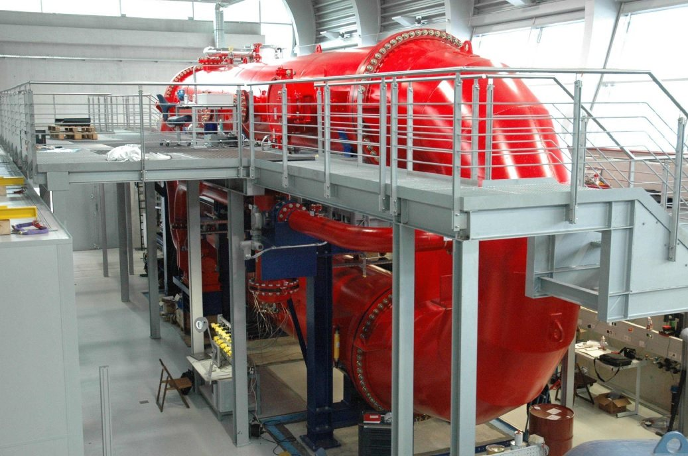
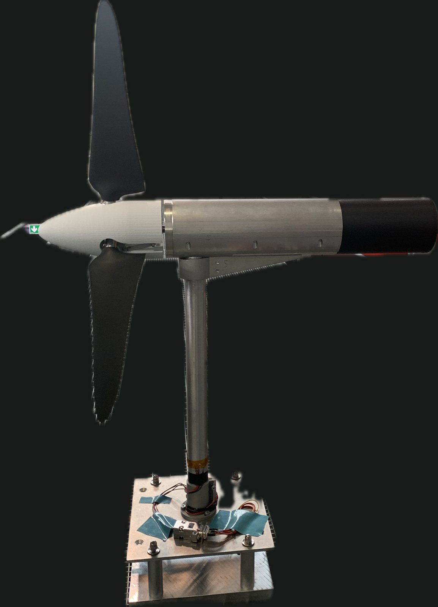
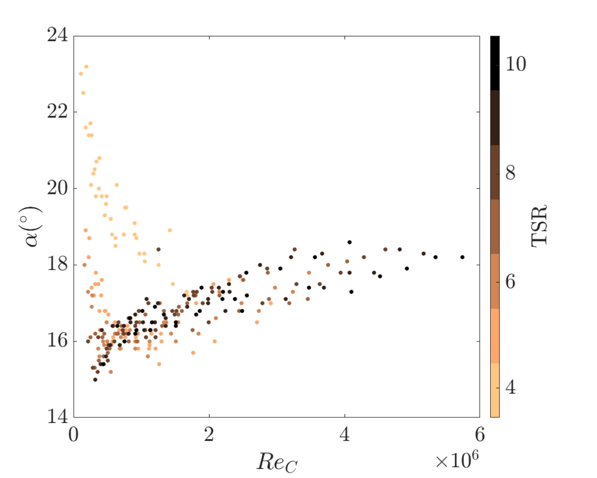

Motivation
The Reynolds number sets how a flow around a blade behaves, and for rotors it is the main thing that separates a lab model from a utility turbine. A model turbine in an ordinary wind tunnel runs at a chord Reynolds number far below that of a full-size rotor, so its blades work in a different boundary-layer regime and its power, thrust and best pitch angle do not transfer directly.
A pressurized tunnel closes the gap without changing the model. Raising the gas pressure raises its density, and with it the Reynolds number, at the same speed and the same rotor size. That lets one model turbine be tested from the low Reynolds numbers of a conventional tunnel up into the millions.
Pressure raises Reynolds number
In the pressurized tunnel the speed and the rotor stay the same while the gas gets denser. The Reynolds number, which scales with density, speed and chord length, rises with the pressure.
Measuring power and thrust
At each condition the turbine's torque and rotation speed give its mechanical power, and strain gauges give the thrust. Normalizing by the kinetic energy and dynamic pressure of the wind gives the power coefficient and the thrust coefficient.
Sweeping the pitch
Repeating this at different blade pitch angles traces out a power curve. Its maximum marks the optimal pitch, which can shift as the Reynolds number changes.
Schematic illustration; not measured data.
Setup
The measurements are done in the Variable Density Turbulence Tunnel (VDTT) at the Max Planck Institute for Dynamics and Self-Organization, where the gas pressure can be varied, and the model turbine is a MoWiTO 0.6 built by ForWind.
- Pressure
- 5.0 bar
- Wind speed
- 3.0 m/s
- Chord Re
- 0
- Diameter Re
- 0
- Rotor speed
- 0 rpm
- Pitch
- 0.0°
Diameter Reynolds number ReD = ρ U D / μ with the rotor diameter D = 0.6 m. Chord Reynolds number Rec = ρ Urel c / μ, with the blade-relative speed Urel = U √(1 + (λ · 0.72)²) and c = 0.039 m (chord at 0.72 R) and SF6 at about 20 °C (ideal-gas density with a compressibility correction, μ ≈ 1.5 × 10⁻⁵ Pa·s). Approximate. The rotor and flow are shown in slow motion; the rotor speed readout is the real value.


According to its manual, the turbine pitches all three blades together with an encoder-equipped stepper motor, and a generator with its own encoder provides the rotation speed. The generator's power is calculated from its voltage and the current through a 0.1 Ω shunt resistor, and its electrical load, and so its torque, is set through a field-effect transistor. The turbine's control electronics are an NI cRIO with NI modules, operated from LabVIEW.
I built the LabVIEW and NI acquisition pipeline that runs the campaign. Beyond the turbine itself, I am designing test stands to measure the efficiency of the rotor's internal drivetrain, and calibrating the strain gauges used for thrust.
Measurements
The campaign measures the power coefficient CP and the thrust coefficient CT across Reynolds number and blade pitch angle. Reynolds number is varied through the tunnel pressure, from about 1 to 15 bar, and through the wind speed. At each pressure and speed the rotor speed is stepped by changing the generator load, and the run is repeated at different pitch angles.
Each run is saved as a time series. The run files are named by tunnel pressure, reference wind speed from the Pitot tube and rotor speed in rpm, and hold the logged channels, including generator torque, mechanical power and the resulting CP, which I average over each run.
Two corrections make the numbers comparable with open-air rotors. The thrust is calibrated against a load cell, and the wind speed at the rotor is corrected for the blockage of the tunnel walls using a one-dimensional momentum model of a rotor in a closed test section.
Modeling
I am benchmarking an OpenFAST blade element momentum model of the same turbine against the measurements, to quantify its prediction errors and trace them to their physical sources, in particular how they change with Reynolds number.
I am also designing a new rotor in CAD, scaled from the IEA 15 MW reference turbine, for fabrication and testing in the tunnel.
Results

The pitch angle that maximizes power also shifts with Reynolds number. That matters when lab-scale results are used to tune control strategies for real turbines.
